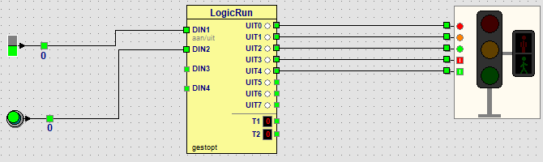

Leerpad › Voor gevorderden › Les 21 van 23

| Stap | Auto's | Voetgangers | Hoe lang? |
|---|---|---|---|
| 1 | groen | rood | tot de knop op DIN2 ingedrukt wordt |
| 2 | oranje | rood | 3 seconden |
| 3 | rood | rood | 1 seconde: het kruispunt is leeg |
| 4 | rood | groen | 8 seconden: de voetganger steekt over |
| 5 | rood | rood | 2 seconden, daarna weer stap 1 |
Stap 1 wacht op een ingang: dat kies je in het LogicRun-venster in de kolom wacht op (Tot ingang aan, DIN2). De andere stappen duren een vaste tijd: 6, 2, 16 en 4 keer 500 ms.
Oudere mensen hebben meer tijd nodig. Geef de voetgangers 12 seconden groen.
Dubbelklik op het LogicRun-blok. Zet bij stap 4 de tijd op 24 (24 x 500 ms = 12 seconden).
Op veel plaatsen knippert het groene mannetje kort voor het einde. Laat het groene mannetje 3 keer knipperen voordat het rood wordt.
Maak stap 4 korter (bijvoorbeeld 10) en voeg erna zes korte stappen toe die afwisselend het groene mannetje aan en uit zetten: rood voor de auto's met groen mannetje (UIT0 + UIT4), dan alleen rood voor de auto's (UIT0), elke stap 1 keer 500 ms. Daarna volgt de stap met alles rood.
Zet in een stap per ongeluk groen voor de auto's en groen voor de voetgangers tegelijk aan. Wat doet het verkeerslicht?
Het verkeerslicht krijgt een rode rand met een ! en in de statusbalk staat GEVAAR. Op een echt kruispunt mag dat nooit gebeuren; daarom zitten er bij een echt verkeerslicht altijd een paar seconden alles rood tussen.